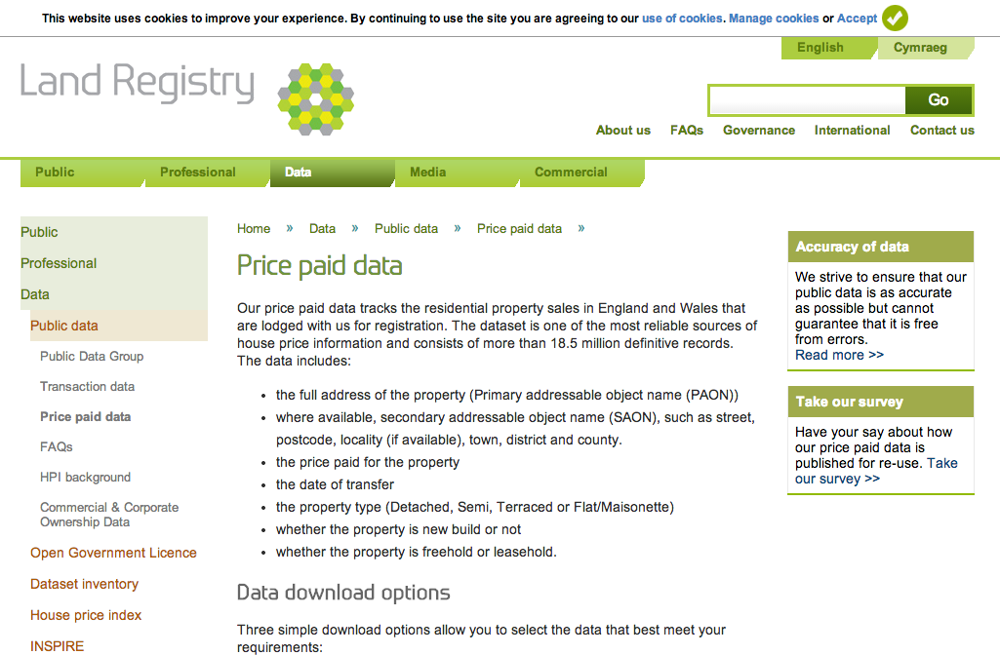
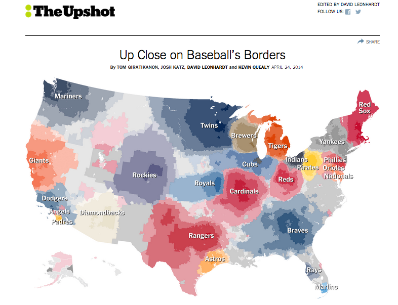
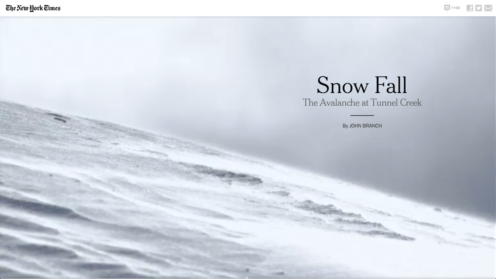
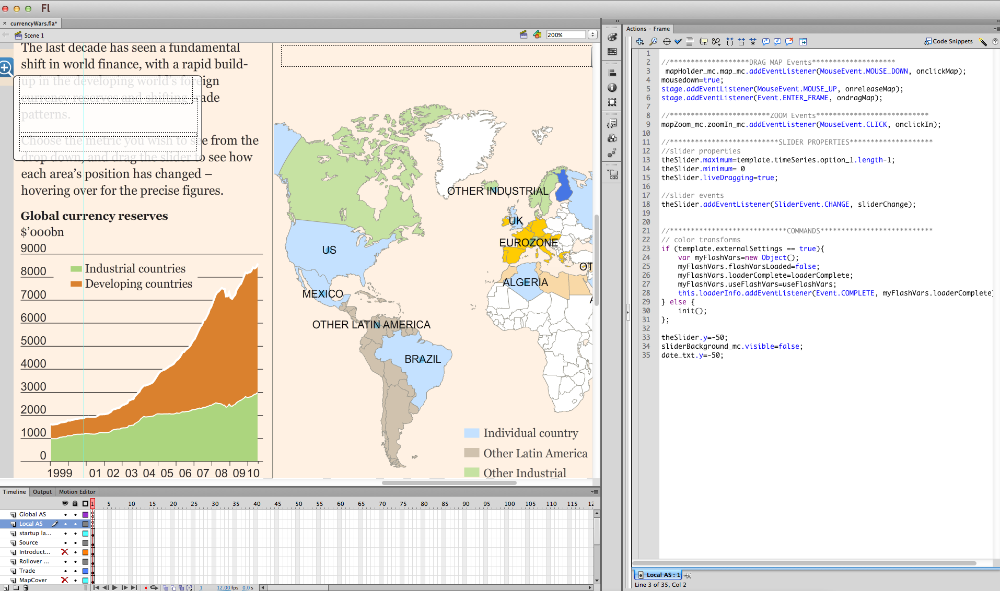
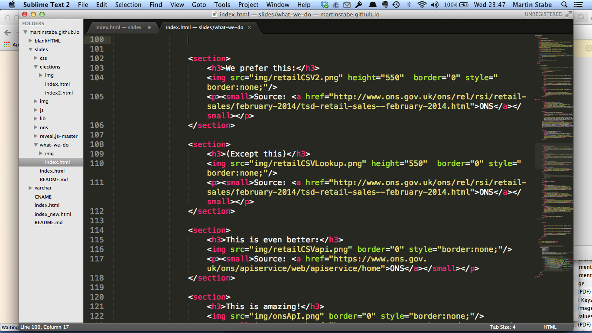
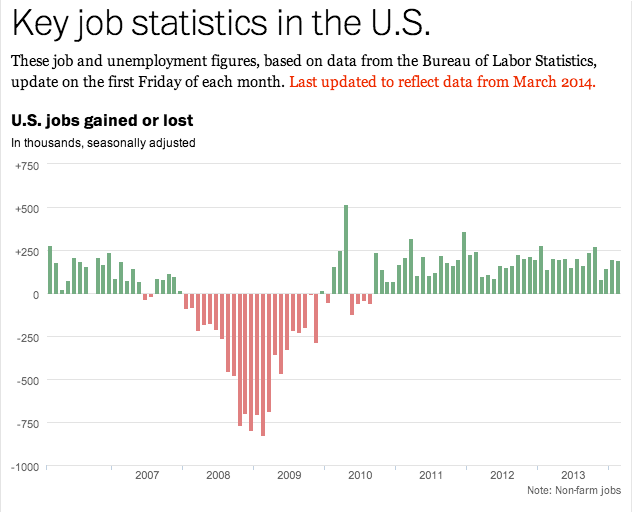
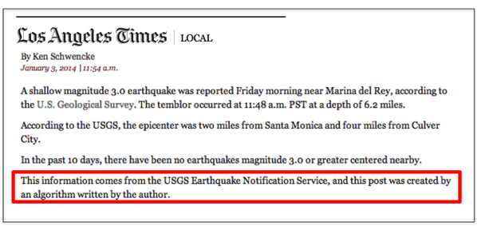

F
What is ‘data journalism’?
“I sort of see data journalism ... as social science done on deadline.
“We’re using the tools that social scientists have used for years ... [and] applying those tools to journalism problems and using it to help us tell stories with more authority.”
Source: “‘Social science done on deadline’: Research chat with ASU’s Steve Doig on data journalism,” Journalists’ Resource, Shorenstein Center, Harvard Kennedy School of Government
More public data available
Source: Land Registry
More proprietary data being generated
Source: Financial Times
... and may have additional uses
Source: The Upshot (New York Times)
Leaks in vast volumes

Source: Getty via Telegraph.co.uk
Leaks in vast volumes
Source: Guardian.co.uk
‘News applications’
“a large web-based interactive database that tells a journalistic story using software instead of words and pictures.”
— Scott Klein, Propublica
News apps

Source: Financial Times
Integrated multimedia story design
Source: New York Times
Then
Now
Responsive design
Source: Financial Times
Responsive design
Source: Financial Times

Source: Rich Gordon, Knight Lab, Northwestern University
The search for ‘unicorns’

Developers can be journalists
 Ben |
Luke |
Callum |
Tom |
What’s next?
Automated stories
Source: Washington Post
Robots!
Source: Los Angeles Times (Image: @BennySP, Twitter)
Help us!
- Great news apps start with great reporters
- If a desk editor is asking, it’s already too late
- Data is information, not decoration